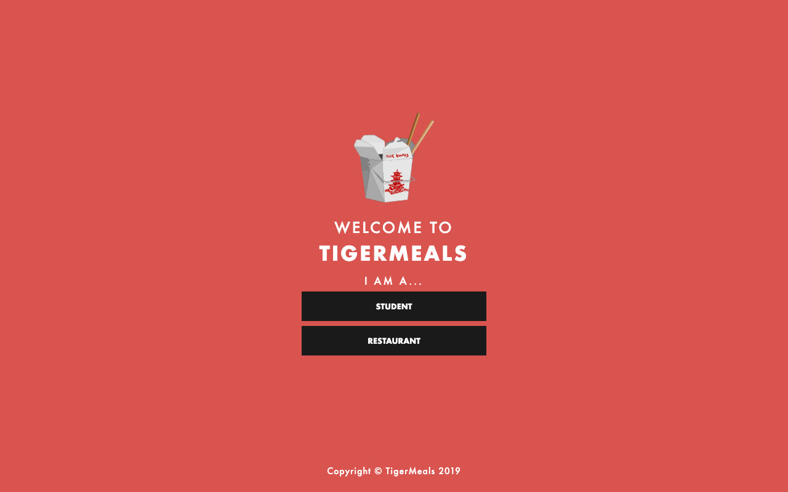
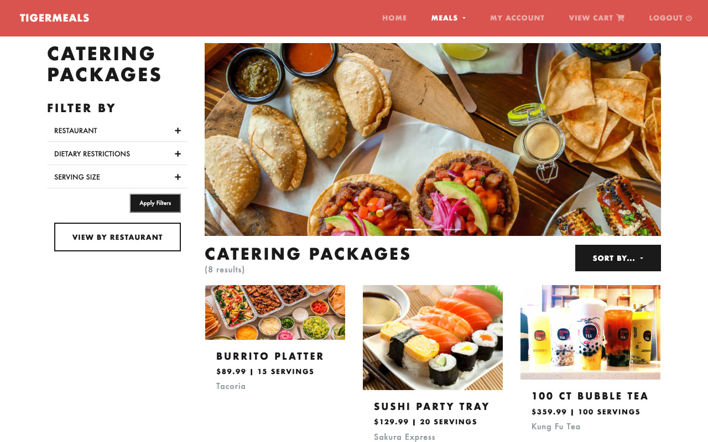
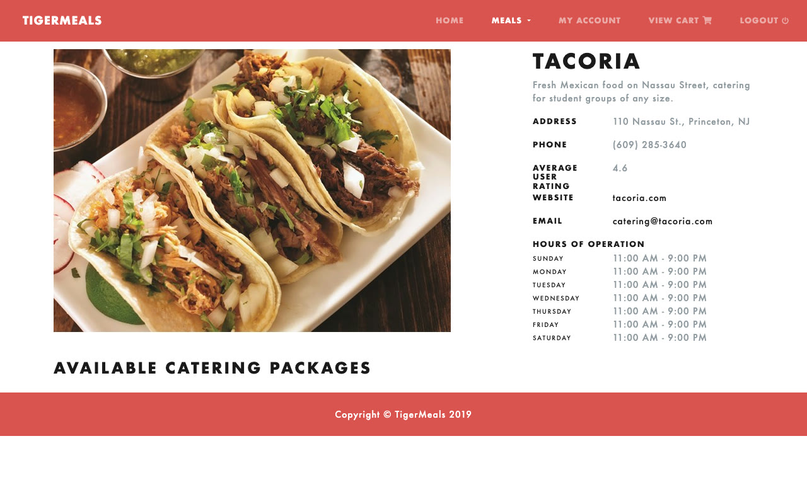
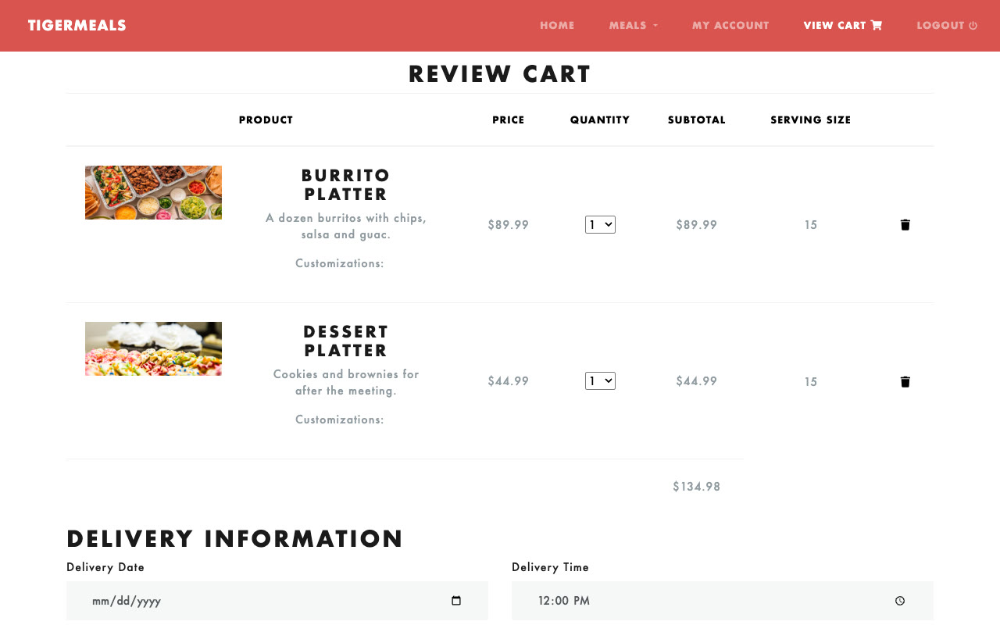
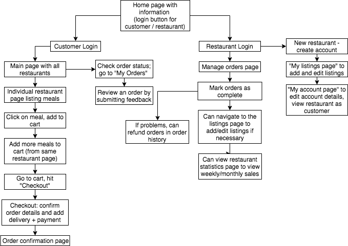

TigerMeals
A catering app for Princeton student groups. Club leaders and RCAs could order party trays from restaurants on Nassau Street, and restaurants could manage their listings and orders. I designed and built the front end.
The original site is gone, so these screens were re-rendered in 2026 from our code, with sample menus.
Screens

Welcome: students and restaurants sign in separately 
Catering packages, filtered by restaurant, diet and serving size 
A restaurant's page 
Cart and delivery details


Trying to make it a startup
A class project wasn't enough for me, so I tried to turn TigerMeals into a real business, aiming to launch in fall 2019. I pitched restaurants on Nassau Street until a few agreed to partner with us, met with student government and the Keller Center about funding and mentorship, and spent the summer rebuilding the site in React for the fall launch.
It didn't take off. A marketplace turned out to be much more than an app: payments the university couldn't hold, restaurants to onboard one by one, and customer service, all while we were full-time students. Still, it was my first time pitching something I built to real customers, and I'd do it again.
The plan, from 2019

Our site map: the customer side on the left, restaurants on the right